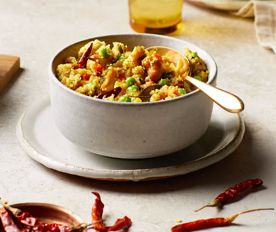

Uppama recipe

Description
Welcome to another tutorial! This time we will look at a typical southern-indian speciality called
Uppama.
Following ingredients will be needed:
- 1/4 cup ghee
- 1 cup uncooked creamy wheat cereal, not instant
- 2 tablespoons ghee
- 1 teaspoon black or yellow mustard seeds
- 1/4 cup raw cashews
- 2 dried chile de arbol peppers, stemmed
- 1 large carrot, cut into 1/4-inch pieces
- 1 cup frozen peas
- 10 medium frsh curry leaves (optional)
- 1/4 teaspoon ground turmeric
- 3 cups water
- 1 teaspoon coarse sea salt
- 2 tablespoons finely chopped fresh cilantro
- 1/4 cup of water
Now follow these steps:
- Melt 1/4 cup ghee in a large skillet over medium heat. Pour in
creamy wheat cereal; toast, stirring frequently, until light brown and
nutty-smelling, 5 to 8 minutes. Transfer to a bowl. Wipe the skillet
with a paper towel.
- Heat remaining 2 tablespoons ghee in the skillet over medium high
heat. Add mustards seeds; cover and wait until seed stop popping
(like popcorn), about 30 seconds. Add cashews and chiles; stir-fry
until nuts are golden brown and chiles blacken, 1 to 2 minutes.
- Stir in carrot, peas, curry leaves, and turmeric; stir-fry about
2 minutes. Stir in 3 cups water and the salt and bring to a boil.
Reduce heat to medium and simmer, covered, until
carrots are fork-tender, 3 to 5 minutes.
- Reduce heat to medium-low and stir in toasted cream of wheat.
(It will instantly absorb liquid and begin to swell.)
Cover and cook until fully softened, about 5 minutes. Remove from heat;
let stand, covered, 3 to 5 minutes.
- Stir remaining 1/4 cup water if desired for a creamier texture.
Sprinkle with cilantro and serve warm.
This tutorial was motivated by